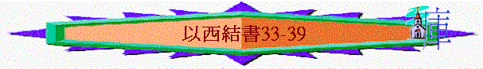

|
真 知 道 祂 |
|||
|
先知的看見(1-3) |
選民的醒覺(4-24) |
列邦的發現(25-39) |
餘民的盼望(40-48) |
|
祂是滿有榮耀權能的神 |
祂是成就怒中所定的神 |
祂是耶和華以色列的神 |
祂是復臨選民中間的神 |
三.列邦的發現(25-39) ───祂是耶和華以色列的神
1.神替以色列報仇(25-32)
2.神必管教以色列(33)
~即使選民、先知犯錯,神亦不會縱容
a.守望者不警誡選民----神會刑罰(33:1-9)
~其嚴重性
i.關乎職份→不忠心
「人子啊，我照樣立你作以色列家守望的人。所以你要聽我口中的話，替我警戒他們。」33:7
ii.關乎別人→累人亡
「我對惡人說：『惡人哪，你必要死！』你以西結若不開口警戒惡人，使他離開所行的道，這惡人必死在罪孽之中，我卻要向你討他喪命的罪（原文作血）。」33:8
iii.關乎自己→神追討
b.以色列不回轉歸神----神必審判(33:10-33)
i.質疑真神不公平,卻不檢討自己的錯處
「你本國的子民還說：『主的道不公平。』其實他們的道不公平。義人轉離他的義而作罪孽，就必因此死亡。惡人轉離他的惡，行正直與合理的事，就必因此存活。你們還說：『主的道不公平。』以色列家啊，我必按你們各人所行的審判你們。」33:17-20
ii.仰望外表的實力而不醒察內裏的污穢
「耶和華的話臨到我說：「人子啊，住在以色列荒廢之地的人說：『亞伯拉罕獨自一人能得這地為業，我們人數眾多，這地更是給我們為業的。』所以你要對他們說，主耶和華如此說：你們吃帶血的物，仰望偶像，並且殺人流血，你們還能得這地為業嗎？你們倚仗自己的刀劍行可憎的事，人人玷污鄰舍的妻，你們還能得這地為業嗎？」」33:23-26
iii.愛聽屬靈的話語而不行出真實的典章
「他們來到你這裡如同民來聚會，坐在你面前彷彿是我的民。他們聽你的話卻不去行；因為他們的口多顯愛情，心卻追隨財利。他們看你如善於奏樂、聲音幽雅之人所唱的雅歌，他們聽你的話卻不去行。看哪，所說的快要應驗；應驗了，他們就知道在他們中間有了先知。」33:31-33
3.神必牧養以色列(34)
a.虛假的牧人(34:1-10)~表面是牧人的身份,但卻沒盡牧人的責任
i.單顧自己
「人子啊，你要向以色列的牧人發預言，攻擊他們，說，主耶和華如此說：禍哉！以色列的牧人只知牧養自己。牧人豈不當牧養群羊嗎？」34:2
ii.不理群羊
「你們吃脂油、穿羊毛、宰肥壯的，卻不牧養群羊。瘦弱的，你們沒有養壯；有病的，你們沒有醫治；受傷的，你們沒有纏裹；被逐的，你們沒有領回；失喪的，你們沒有尋找；但用強暴嚴嚴地轄制。因無牧人，羊就分散；既分散，便作了一切野獸的食物。我的羊在諸山間、在各高岡上流離，在全地上分散，無人去尋，無人去找。」34:3-6
iii.施壓群羊
「你們吃脂油、穿羊毛、宰肥壯的，卻不牧養群羊。」34:3
b.真實的牧者(34:11-31)
~首領不牧養神的百姓,但神必親自尋找祂的羊
「必知道我、耶和華他們的神是與他們同在的，並知道他們以色列家是我的民。這是主 耶和華說的。你們作我的羊，我草場上的羊，乃是以色列人，我也是你們的神。這是主耶和華說的。」34:30-31
i.親身的牧養
「主耶和華如此說：看哪，我必親自尋找我的羊，將他們尋見。」34:11
ii.主動的牧養
「牧人在羊群四散的日子怎樣尋找他的羊，我必照樣尋找我的羊。這些羊在密雲黑暗的日子散到各處，我必從那裡救回他們來。」34:12
iii.美好的牧養
「我必在美好的草場牧養他們。他們的圈必在以色列高處的山上，他們必在佳美之圈中躺臥，也在以色列山肥美的草場吃草。」34:14
iv.憐恤的牧養
「失喪的，我必尋找；被逐的，我必領回；受傷的，我必纏裹；有病的，我必醫治；只是肥的壯的，我必除滅，也要秉公牧養他們。」34:16
v.公義的牧養
「我的羊群哪，論到你們，主耶和華如此說：我必在羊與羊中間、公綿羊與公山羊中間施行判斷。你們這些肥壯的羊，在美好的草場吃草還以為小事嗎？剩下的草，你們竟用蹄踐踏了；你們喝清水，剩下的水，你們竟用蹄攪渾了。」34:17-18
「所以，主耶和華如此說：我必在肥羊和瘦羊中間施行判斷。」34:20
vi.大能的牧養
「我必與他們立平安的約，使惡獸從境內斷絕，他們就必安居在曠野，躺臥在林中。我必使他們與我山的四圍成為福源，我也必叫時雨落下，必有福如甘霖而降。田野的樹必結果，地也必有出產；他們必在故土安然居住。我折斷他們所負的軛，救他們脫離那以他們為奴之人的手；那時，他們就知道我是耶和華。」34:25-27
★34:23題到神必立一牧人(大衛)牧養他們,必在他們中間作王,此「大衛」可能是預表耶穌基督(約10:11、耶30:9、耶23:5)因耶穌是牧人,也是大衛後裔(按肉身),祂也是彌賽亞,將來的君王。
4.神必復興以色列(35-39)
a.復興的原因:
「所以，你要對以色列家說，主耶和華如此說：以色列家啊，我行這事不是為你們，乃是為我的聖名，就是在你們到的列國中所褻瀆的。我要使我的大名顯為聖；這名在列國中已被褻瀆，就是你們在他們中間所褻瀆的。我在他們眼前，在你們身上顯為聖的時候，他們就知道我是耶和華。這是主耶和華說的。」36:22-23
「我要在我民以色列中顯出我的聖名，也不容我的聖名再被褻瀆，列國人就知道我是耶和華以色列中的聖者。」39:7
「主耶和華如此說：「我要使雅各被擄的人歸回，要憐憫以色列全家，又為我的聖名發熱心。」39:25
i.因神的憐憫
ii.為神己的名
(1)神會為自己的名發熱心
(2)神會用選民顯自己的名
(3)神能使萬民知道祂的名
b.復興的內容
i.賜福以色列之山(35:1-36:15)
(1)西珥山的荒涼
「耶和華的話又臨到我說：「人子啊，你要面向西珥山發預言，攻擊他，」35:1-2
~「西珥山」代表以東
(a)因其仇恨
「對他說，主耶和華如此說：西珥山哪，我與你為敵，必向你伸手攻擊你，使你荒涼，令人驚駭。我必使你的城邑變為荒場，成為淒涼。你就知道我是耶和華。因為你永懷仇恨，在以色列人遭災、罪孽到了盡頭的時候，將他們交與刀劍。」35:3-5
(b)因其驕傲
「你也必知道我耶和華聽見了你的一切毀謗，就是你攻擊以色列山的話，說：『這些山荒涼，是歸我們吞滅的。』你們也用口向我誇大，增添與我反對的話，我都聽見了。」35:12-13
(2)以色列山的興旺
「以色列山哪，你必發枝條，為我的民以色列結果子，因為他們快要來到。看哪，我是幫助你的，也必向你轉意，使你得以耕種。我必使以色列全家的人數在你上面增多，城邑有人居住，荒場再被建造。我必使人和牲畜在你上面加增；他們必生養眾多。我要使你照舊有人居住，並要賜福與你比先前更多，你就知道我是耶和華。」36:8-11
~無論人和牲畜及福氣會比先前更多!
ii.更新以色列之地(36:16-38)
(1)先前的污穢
「人子啊，以色列家住在本地的時候，在行動作為上玷污那地。他們的行為在我面前，好像正在經期的婦人那樣污穢。」36:17
(2)將來的更新
(a)人得潔淨
「我必用清水灑在你們身上，你們就潔淨了。我要潔淨你們，使你們脫離一切的污穢，棄掉一切的偶像。」36:25
(b)心得更新
「我也要賜給你們一個新心，將新靈放在你們裡面，又從你們的肉體中除掉石心，賜給你們肉心。」36:26
(c)地得重修
「那時，在你們四圍其餘的外邦人必知道我耶和華修造那毀壞之處，培植那荒廢之地。我耶和華說過，也必成就。」36:36
iii.復興以色列之人(37:1-14)
(1)復興的異象
「耶和華的靈（原文作手）降在我身上。耶和華藉他的靈帶我出去，將我放在平原中；這平原遍滿骸骨。他使我從骸骨的四圍經過，誰知在平原的骸骨甚多，而且極其枯乾。他對我說：「人子啊，這些骸骨能復活嗎？」我說：「主耶和華啊，你是知道的。」他又對我說：「你向這些骸骨發預言說：枯乾的骸骨啊，要聽耶和華的話。主耶和華對這些骸骨如此說：『我必使氣息進入你們裡面，你們就要活了。我必給你們加上筋，使你們長肉，又將皮遮蔽你們，使氣息進入你們裡面，你們就要活了；你們便知道我是耶和華。』」37:1-6
(2)復興的精義
~神的復興
(a)不在乎時間多久
「他使我從骸骨的四圍經過，誰知在平原的骸骨甚多，而且極其枯乾。」37:2
(b)不在乎人的能力
「他對我說：「人子啊，這些骸骨能復活嗎？」我說：「主耶和華啊，你是知道的。」」37:3
(c)不在乎人的感覺
「主對我說：「人子啊，這些骸骨就是以色列全家。他們說：『我們的骨頭枯乾了，
我們的指望失去了，我們滅絕淨盡了。』」37:11
(d)實在乎神的說話
「他又對我說：「你向這些骸骨發預言說：枯乾的骸骨啊，要聽耶和華的話。」」37:4
「於是我遵命說預言，氣息就進入骸骨，骸骨便活了，並且站起來，成為極大的軍隊。」37:10
(e)實在乎神的靈
「我必將我的靈放在你們裡面，你們就要活了。我將你們安置在本地，你們就知道我耶和華如此說，也如此成就了。這是耶和華說的。」37:14
~單有肉身還不足夠,仍需要有神的靈
iv.建立以色列之國(37:15-28)
(1)合一的國度
「人子啊，你要取一根木杖，在其上寫『為猶大和他的同伴以色列人』；又取一根木杖，在其上寫『為約瑟，就是為以法蓮，又為他的同伴以色列全家』。你要使這兩根木杖接連為一，在你手中成為一根。你本國的子民問你說：『這是什麼意思？你不指示我們嗎？』」37:16-18
「我要使他們在那地，在以色列山上成為一國，有一王作他們眾民的王。他們不再為二國，決不再分為二國。」37:22
(2)聖潔的國度
「也不再因偶像和可憎的物，並一切的罪過玷污自己。我卻要救他們出離一切的住處，就是他們犯罪的地方；我要潔淨他們，如此，他們要作我的子民，我要作他們的神。」37:23
(3)神治的國度
「我的僕人大衛必作他們的王；眾民必歸一個牧人。他們必順從我的典章，謹守遵行
我的律例。」37:24
(4)求遠的國度
「他們必住在我賜給我僕人雅各的地上，就是你們列祖所住之地。他們和他們的子孫，並子孫的子孫，都永遠住在那裡。我的僕人大衛必作他們的王，直到永遠。並且我要與他們立平安的約，作為永約。我也要將他們安置在本地，使他們的人數增多，又在他們中間設立我的聖所，直到永遠。」37:25-26
(5)神在的國度
「我的居所必在他們中間；我要作他們的神，他們要作我的子民。我的聖所在以色列人中間直到永遠，外邦人就必知道我是叫以色列成為聖的耶和華。」37:27-28
v.消滅以色列之敵(38-39)
~將來以色列的仇敵必出現
(1)仇敵的名稱
「耶和華的話臨到我說」38:1
「出來要迷惑地上四方（原文作角）的列國，就是歌革和瑪各，叫他們聚集爭戰。他們的人數多如海沙。」啟20:8
~稱為歌革,是甚麼人,是甚麼地不知道
~啟20:8曾出現,可能是指將來敵神的勢力
(2)仇敵的權勢
(a)擁有王權
~是「羅施」(原文頭),「米設」,「士巴」(雅弗的兒子)的王
(b)擁有國度
(c)擁有軍力
「我必用鉤子鉤住你的腮頰，調轉你，將你和你的軍兵、馬匹、馬兵帶出來，都披掛整齊，成了大隊，有大小盾牌，各拿刀劍。」38:4
「住以色列城邑的人必出去撿器械，就是大小盾牌、弓箭、梃杖、槍矛，都當柴燒火，直燒七年。」39:9
(d)擁有地位(多國被他率領)
「波斯人、古實人，和弗人（又作呂彼亞人），各拿盾牌，頭上戴盔。」38:5
「你必從本地，從北方的極處率領許多國的民來，都騎著馬，乃一大隊極多的軍兵。」38:15
~「波斯人」→現今的伊朗
~「古實人」→現今的蘇丹,埃塞俄比亞人
~「弗人」→利比亞人
~「歌篾」「陀迦瑪族」→土耳其人
(3)仇敵的源頭
「歌篾人和他的軍隊，北方極處的陀迦瑪族和他的軍隊，這許多國的民都同著你。」38:6
「你必從本地，從北方的極處率領許多國的民來，都騎著馬，乃一大隊極多的軍兵。」38:15
~從北方的極處
(4)仇敵的慘敗
~全然滅絕,其慘況用很多事物、事件形容
(a)軍隊被鳥所吃
「我必用鉤子鉤住你的腮頰，調轉你，將你和你的軍兵、馬匹、馬兵帶出來，都披掛整齊，成了大隊，有大小盾牌，各拿刀劍。」38:4
(b)軍械全然燒毀
「你和你的軍隊，並同著你許多國的民，必如暴風上來，如密雲遮蓋地面。主耶和華如此說：「到那時，你心必起意念，圖謀惡計。」38:9-10
(c)屍體充滿聖地
「以色列家的人必用七個月葬埋他們，為要潔淨全地。」39:12
「巡查遍地的人要經過全地，見有人的骸骨，就在旁邊立一標記，等葬埋的人來將骸骨葬在哈們歌革谷。他們必這樣潔淨那地，並有一城名叫哈摩那。」39:15-16
~「哈們歌革谷」指歌革的群眾,「哈摩那」與哈們同一字音
(d)肉血成為活祭
「人子啊，主耶和華如此說：你要對各類的飛鳥和田野的走獸說：你們聚集來吧，要從四方聚到我為你們獻祭之地，就是在以色列山上獻大祭之地，好叫你們吃肉、喝血。你們必吃勇士的肉，喝地上首領的血，就如吃公綿羊、羊羔、公山羊、公牛，都是巴珊的肥畜。」39:17-18
(5)榮耀的彰顯
「我必顯我的榮耀在列國中；萬民就必看見我所行的審判與我在他們身上所加的手。這樣，從那日以後，以色列家必知道我是耶和華他們的神。」39:21-22